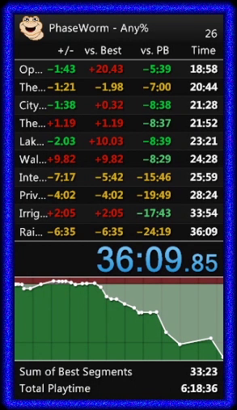

PhaseWorm
PhaseWormSpeedrun.com Leaderboard
2020 Jun 28
I’m excited to announce that today PhaseWorm comes to speedrun.com with an official game leaderboard! PhaseWorm was built for speedrunning, and so I’ve also included a livesplit autosplitter for release with the game. Just add this component into livesplit and the game will track your in-game time.

Even if you don’t want to use livesplit, you can speedrun phaseworm - the in-game timer will give you your final time and death count when you roll credits!